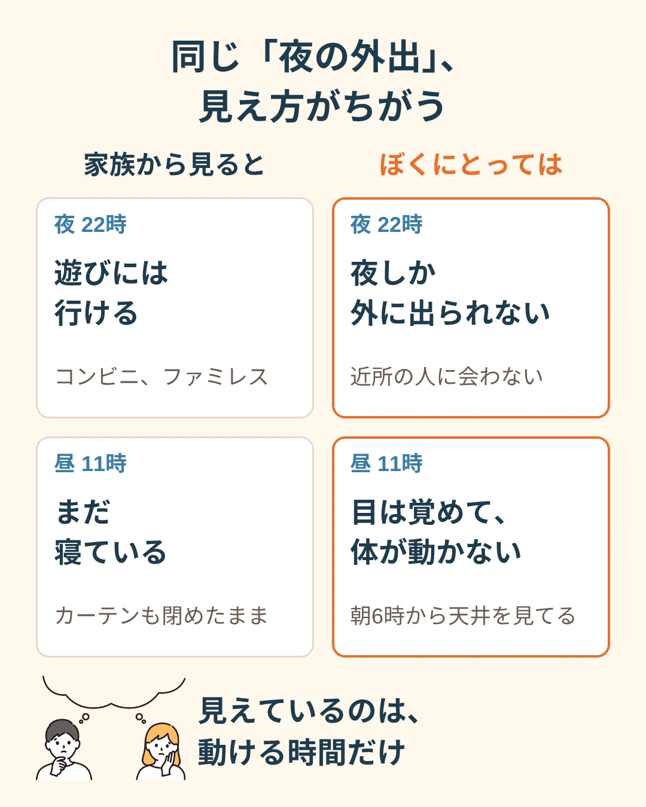
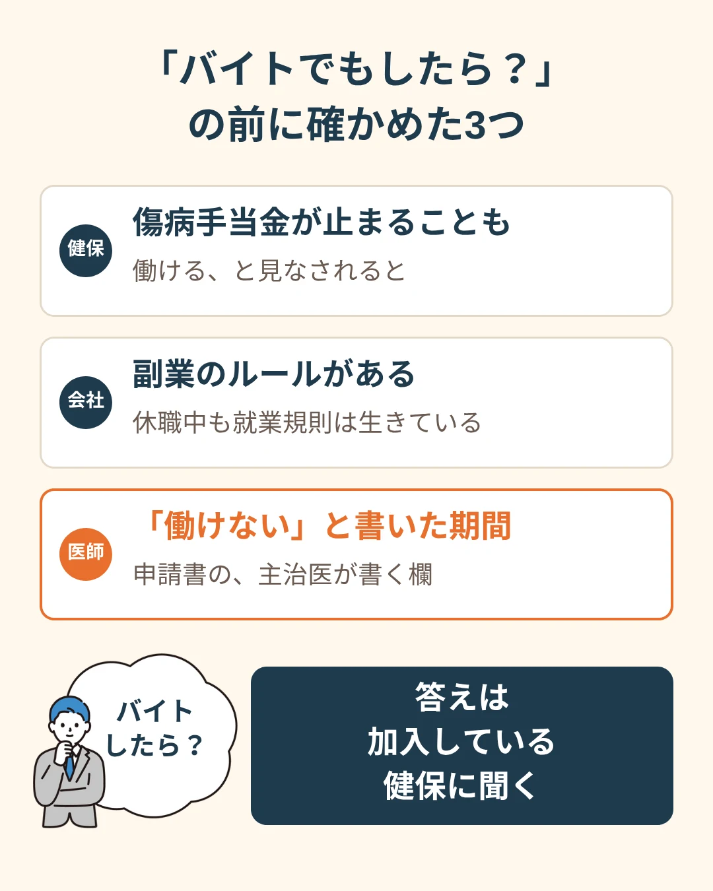
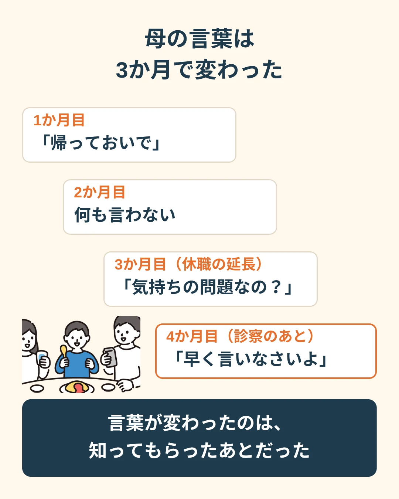
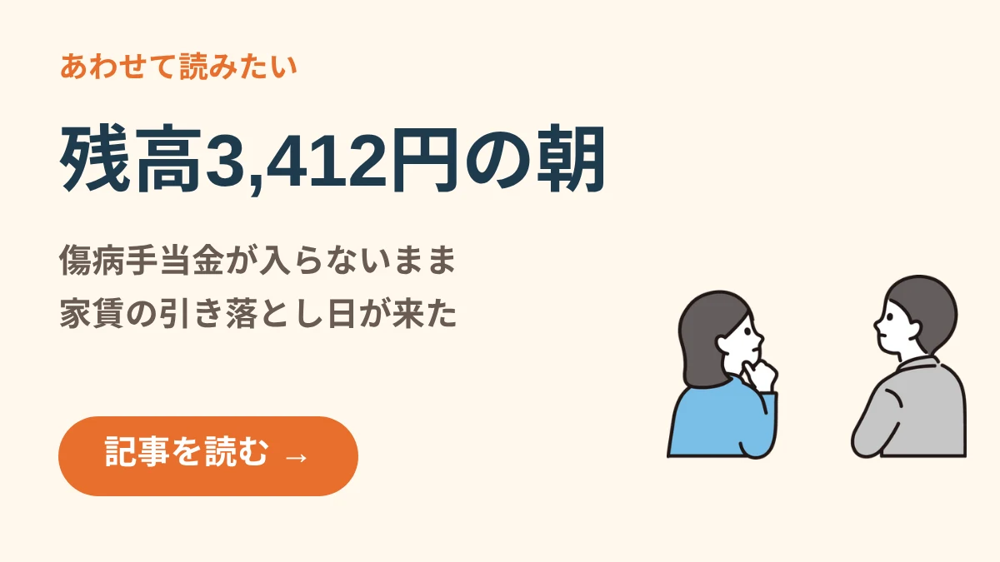
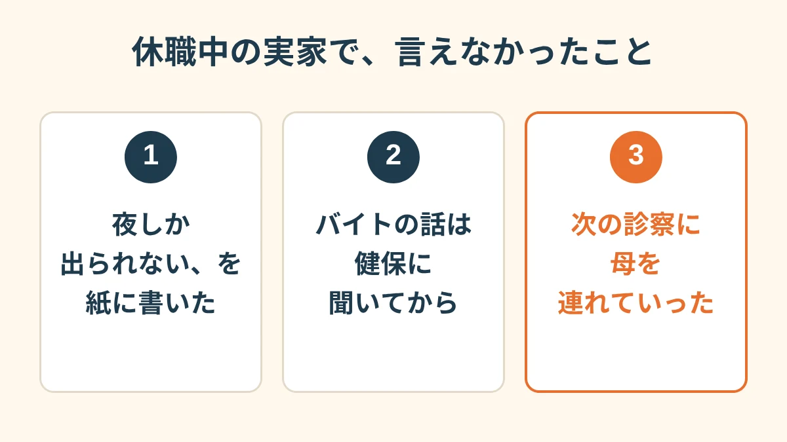

22時14分。玄関の鍵を、音が鳴らないようにゆっくり回した。
居間の電気はもう消えている。台所だけ、母が明日の米を研いだあとの明かりがついていた。
コンビニまで、歩いて7分。この時間だけ、ぼくは外に出られる。
夜の7分だけ、外に出られる
31歳。ネット回線の法人営業を7年やってきた。7月に適応障害と言われて、休職に入った。
最初の1か月は、一人暮らしの部屋にいた。カップ麺の容器がシンクにたまっていくのを見ていたら、母から電話がきた。「帰っておいで。部屋、そのままにしてあるから」。
8月の終わり、高校まで使っていた2階の部屋に戻った。
朝は6時に目が覚める。目は覚めているのに、体が布団から出ていかない。天井の木目を、端から数えている。
11時すぎに、やっと下に降りる。テーブルには、ラップのかかったおにぎりが2つ。母は「おはよう」と言う。もう全然おはようの時間じゃないのに。
午後は部屋にいる。夕飯は3人で食べる。父はテレビのほうを向いたまま、ぼくのほうはあまり見ない。
それで、22時。家が静かになってから、コンビニに行く。週に1回くらいは、地元の同級生とファミレスに行く夜もある。
夜なら、近所の人に会わない。「あら、今日はお休み？」と聞かれない。それだけの理由だった。

「母に『顔色いいじゃん』って言われるのが、いちばんしんどかったです。そりゃそうなんですよ、調子いい時間しか下に降りてないんだから。悪い時間は部屋から出られないので、母は見てない。説明しようとすると泣きそうになるから、結局『うん』って言ってました。3か月くらい、ずっと『うん』」
延長の夜、「気持ちの問題なんじゃないの」
10月の終わり、主治医から「もう1か月、休みましょう」と言われた。延長の診断書を会社に郵送した日の夜、夕飯のときに「延長になった」と言った。
母は箸を置いて、少し間をあけてから言った。
「結局、気持ちの問題なんじゃないの？ 夜はちゃんと出かけられてるんだし」
責める声じゃなかった。どちらかというと、心配している声だった。それが、余計にこたえた。最初に「帰っておいで」と言ってくれたのも、この人なのに。
父がテレビを見たまま続けた。
「家にずっといるのも、よくないだろ。アルバイトでもしてみたらどうだ。体も動かすし」
ぼくは「うん」とだけ言って、2階に上がった。
部屋に戻ってから、言い返す言葉を考えた。
夜しか出られないのは、昼の外がしんどいからで。昼に近所の人に会うと「仕事は？」って顔をされる気がするからで。朝は、起きたくても体が起きないからで。
どれも、頭の中で言ってみると言い訳みたいに聞こえた。口に出したら「じゃあ昼も出てみたら」と返される気がした。それで、やめた。
「うちは親父が『俺の時代は休職なんてなかった』って人で。傷病手当金もらってることも話してなかったから、無職と同じだと思われてたんですよね。で、月に1回、通帳を見せたら、やっと黙った。いや、黙っただけで、わかってくれたわけじゃないと思いますけど」
「バイトでもしたら」の前に、調べたこと
その夜、布団の中でスマホを開いた。父の「アルバイト」の一言が、ずっと引っかかっていた。
ぼくは今、給料の代わりに、健保から傷病手当金をもらっている。これって、バイトしたらどうなるんだろう。
翌日の昼、加入している健保の窓口に電話した。名前は言わずに、一般的な話として聞いた。返ってきたのは、だいたいこういうことだった。
傷病手当金は、病気で働けないあいだの生活のためのもの。別のところで働いて収入があったり、働ける状態だと判断されたりすると、その期間は支給されないことがある。細かいことは、状況を聞いてから。
会社の就業規則も、久しぶりに開いた。副業は「事前に届け出」と書いてあった。休職中でも、それは変わらない。
それと、手当金の申請書には、主治医が「働けない」と書いてくれる欄がある。毎月、先生に書いてもらっている欄だ。そこに「働けない」と書いてもらいながら、夜にバイトに行くのは、たぶん、筋が通らない。

夜中の1時。台所に降りて、炊飯器の横に付箋を3枚貼った。口で言うと途中で黙ってしまうので、紙にした。
「夜に出かけられるのは、近所の人に会わない時間だからです。昼は、目は覚めてても体が起きません」
「バイトをすると、傷病手当金が止まるかもしれないので、今はしません。健保に聞きました」
「次の診察（11月14日）、よかったら一緒に来てください」
3枚目を書くのに、いちばん時間がかかった。
あとで知ったけど、家族に手紙やメールで今の状態を伝える、通院に一緒に来てもらって主治医から説明してもらう、というのは、厚生労働省の働く人向けのサイトにも書いてあった。
 家族のサポート（こころの耳）家族にわかってもらえないときの伝え方が、6つ並んでいる。外部サイトが開きます →
家族のサポート（こころの耳）家族にわかってもらえないときの伝え方が、6つ並んでいる。外部サイトが開きます →
診察室に、母がいた
付箋の返事は、なかった。朝起きたら、3枚とも剥がされていた。
11月14日の朝、母は何も言わずに車のキーを持っていた。待合室で、母はぼくの保険証を何度もバッグから出して確かめていた。持ってるのはぼくなのに。
診察の最後に、先生が「お母さん、何か聞きたいことはありますか」と言った。
母は少し迷ってから、「あの……気持ちの問題、なんでしょうか。夜は出かけられるみたいで」と聞いた。
先生は「一日のなかで調子に波がある人は、わりといますよ。夕方から夜のほうが楽、という人も。動ける時間に少し動けているのは、悪いことじゃないです」と言った。それから、ぼくの朝の様子を、ぼくより上手に説明した。
帰りの車で、母は前を見たまま言った。
「そういうのは、早く言いなさいよ」
言ったら、また「気持ちの問題」って言われると思った。そう言いかけて、やめた。

父は、今でもときどき「で、バイトは」と言う。それは変わらない。健保の話をしても、「ふうん」で終わる。
先週の朝、11時すぎに下に降りたら、居間のカーテンが10センチだけ開いていた。
おにぎりの横に、母の字で「起きたら少し日に当たりなさい」と書いた紙があった。
返事は、まだ書いていない。
休職中、いちばん家族に言いにくいのは、お金のことかもしれない。傷病手当金が振り込まれる前に、家賃の引き落とし日が来てしまった人の話がある。

傷病手当金の入金を待っていた、残高3,412円の朝 →
この記事に、聞いてみたいことはありますか？
「自分の場合はどうなんだろう」と思ったことを、気軽に書いてみてください。いただいた質問は個別にお返事したうえで、匿名で記事にすることがあります。